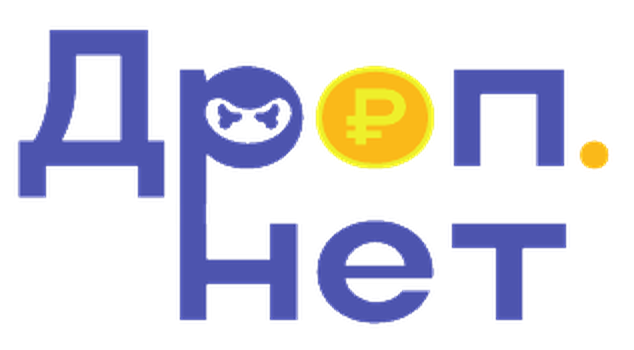

Команда

Большой Камень — город Приморского края (около 42 тыс. жителей [7]) рядом с Владивостоком. Его школьники живут в той же цифровой среде, что и весь край: вербовщики выходят на подростков через мессенджеры и соцсети, предлагая «лёгкий заработок» [3, 4], а полиция Приморья отдельно предупреждает школьников о схеме «ошибочного перевода» [2]. Важно для школы: с 14 лет у подростка может быть своя карта [5], а отвечать по закону он будет с 16 лет [6].
Школьники 14–17 лет Большого Камня в мессенджерах, соцсетях и онлайн-играх сталкиваются с вербовкой в дропперы под видом «лёгкой подработки» и не распознают её, из-за чего передают свои карты или проводят чужие переводы и рискуют попасть в базу Банка России и под уголовную ответственность.
Запреты уже есть, но подросток не распознаёт сигналы вербовки в момент предложения: плату «ни за что», просьбу вернуть «ошибочный» перевод или передать карту. Изменить нужно именно этот момент — до того, как школьник согласится.